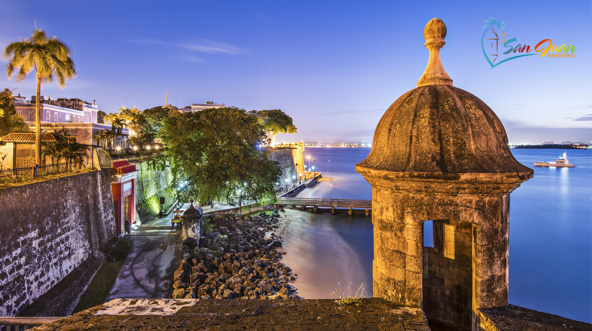
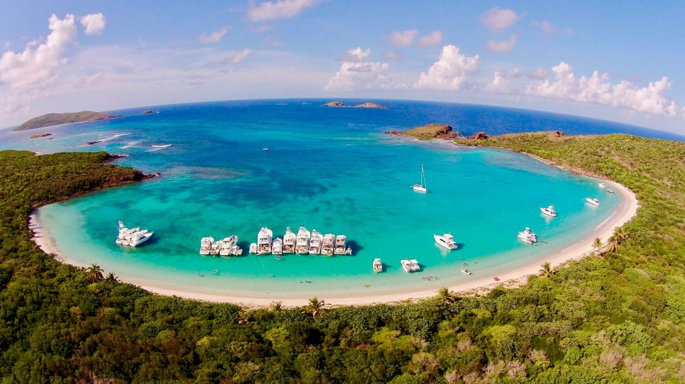

El Morro
Este castillo es parte del Sitio Histórico Nacional de San Juan y fue declarado Patrimonio de la Humanidad por las Naciones Unidas en 1983.

Playas
Los estudios recientes revelan que Puerto Rico cuenta con un total de 1,225 playas distribuidas en 799 millas de costa. De éstas, un total de 52 están zonificadas como playas públicas; lo cual significa que son aptas para bañistas y la recreación pasiva..

Comida criolla
La vitalidad de la cultura puertorriqueña cobra vida en sus platos, una celebración de sabores que los visitantes tienen la oportunidad de disfrutar. Algunos de los favoritos son el mofongo, los tostones, los pasteles, el arroz con gandules, el tembleque y el coquito..